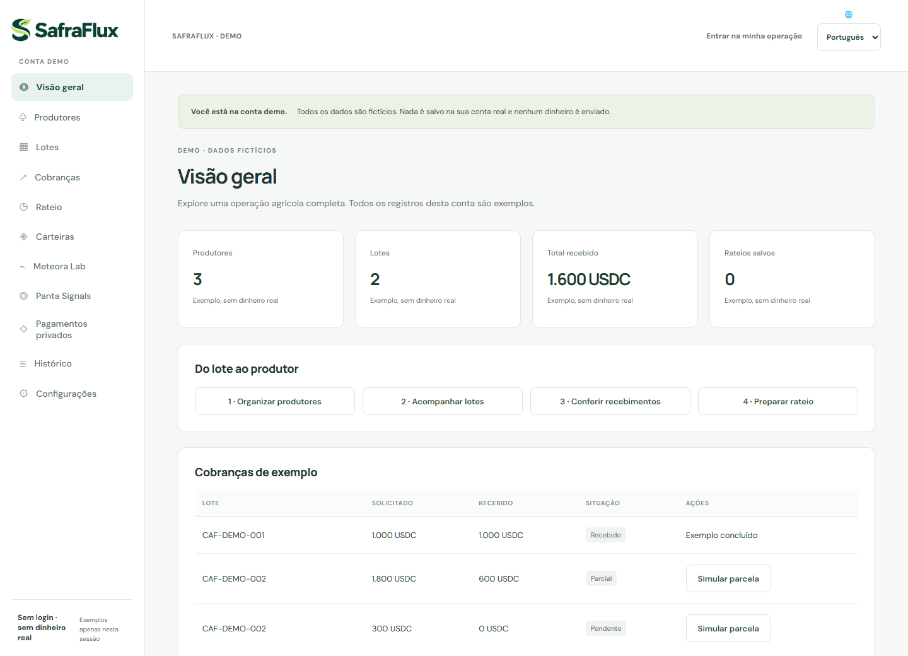

Organizar o lote
Produtores, quantidades entregues e contexto da venda no mesmo fluxo.
MULHERES QUE CONSTROEM · BRASIL
Somos a SheBuilds. Conectamos nossas perspectivas para transformar problemas reais em soluções com propósito.
Beatriz, Sonia & Olivia
De três cantos do Brasil, construindo juntas.
01 / NOSSA ESSÊNCIA
Somos Beatriz, Sonia e Olivia. A SheBuilds reúne desenvolvimento de produto, análise de sistemas e estratégia de negócio para transformar necessidades concretas em soluções que as pessoas possam compreender e usar.
Trabalhamos remotamente, de Pernambuco, Brasília e São Paulo. Nossa experiência com o agro vem de antes do SafraFlux: Beatriz e Sonia construíram juntas projetos premiados e apresentaram RaízesGo no CNPA 2024. Olivia soma sua trajetória em inovação, aceleração e modelos de negócio, além de conexões em comunidades de agro e café.
Começamos pelo café: uma venda pode reunir o trabalho de várias famílias. Nossa pergunta é simples — como conectar esse recebimento a uma explicação clara da participação de cada produtor?
As pessoas por trás das ideias ↗02 / NOSSO PROJETO EM FOCO
FINTECH · AGROTECHUma venda coletiva. Uma participação clara para cada produtor.
O SafraFlux ajuda o financeiro de cooperativas e pequenas exportadoras de café a relacionar recebimentos aos lotes, acompanhar parcelas e explicar quanto cabe a cada produtor. USDC é o token utilizado na integração principal de cobrança; Solana é a rede usada para conferir esses recebimentos.
Demo pública com dados fictícios. Sem login ou dinheiro real.

Produtores, quantidades entregues e contexto da venda no mesmo fluxo.
Cobranças, parcelas e verificação de recebimentos conforme a rede.
Memória de rateio com base e prêmio de qualidade separados por produtor.
Cálculo de rateio não envia dinheiro. O café é nosso ponto de partida; benefícios e adoção serão avaliados em pilotos.
O PROBLEMA QUE ESCOLHEMOS RESOLVER
Uma venda de café pode reunir várias famílias, diferentes quantidades e prêmios de qualidade. O pagamento pode chegar em parcelas — e o recibo sozinho não explica a participação de cada pessoa.
Produtores, lotes, cobranças, parcelas, histórico e demonstrativos individuais conectados em uma rotina de prestação de contas.
Acesso à própria participação após confirmação do vínculo pela cooperativa. Quantidade, base, prêmio e total visíveis, com revisão e pedido de correção.
Uma cobrança identificada, com referência e QR code. Nosso público inicial já precisa ter uma razão para usar esse meio de pagamento.
UM EXEMPLO PARA ENTENDER
Com entregas de 60 kg e 40 kg, o rateio por quantidade resulta em 600 e 400 USDC. Com prêmio de 10% e pontos de qualidade 2 e 1, o demonstrativo passa a 615 e 385 USDC.
Exemplo fictício das regras da demo. Qualidade é declarada pela operação; a blockchain não certifica a entrega física. O cálculo não movimenta fundos.
Sem prêmio de qualidade
Sem prêmio de qualidade
Total conservado no rateio: 1.000 USDC
DO RETORNO À EVOLUÇÃO DO PRODUTO
O que já entregamos, o aprendizado externo que orientou uma mudança e as evidências que queremos construir na próxima etapa.
O retorno trouxe uma necessidade concreta: uma área segura para agricultores acompanharem informações da venda pela cooperativa.
Incluímos e aprimoramos os demonstrativos individuais, o vínculo confirmado com a cooperativa e a revisão com pedido de correção.
Teste externo relatado pela equipe, com dados fictícios. Identidade e empresa preservadas. Não representa cliente pagante ou piloto comercial.
Cadastros de produtores e lotes, cobranças, parcelas, cálculo de rateio, histórico, backups e exportações CSV/JSON. A demo pode ser explorada sem conta, carteira ou fundos.
A cooperativa confirma o vínculo antes de compartilhar. O agricultor vê os demonstrativos enviados à sua conta e pode solicitar correções; revisões mantêm o histórico.
Zcash tem transferência confirmada em regtest, um ambiente local sem valor monetário. Testes internos e essa evidência não equivalem a auditoria independente ou pagamento comercial.
UM ROTEIRO PARA EXPLORAR
Os recibos da demo são simulados. A sessão não altera contas reais nem consulta a blockchain para simular pagamentos.
TECNOLOGIA A SERVIÇO DA OPERAÇÃO
O valor do produto está no fluxo de trabalho. As integrações ajudam a identificar e conferir pagamentos, com responsabilidades explícitas.
Cobranças via Solana Pay, referência e QR code. A conferência no servidor verifica rede, token, destinatário, referência, valor e finalização, a partir da assinatura informada pelo operador.
Adapters para Base, Arbitrum, Ethereum L1 e HyperEVM com USDC; Tempo com pathUSD e Robinhood Chain com USDG. A associação comercial do pagamento ao lote é declarada pelo operador.
Cloak integra fluxos de USDC privado sobre Solana. Zcash usa ZEC nativo e tem prova local regtest. Validação financeira de Cloak em mainnet e carteiras externas permanece pendente.
Cloudflare Workers sustenta a aplicação, a API e a verificação de pagamentos. Cloudflare D1 mantém registros isolados por conta, histórico de revisão e recuperação. Google/GitHub e autenticador compõem o acesso.
Beatriz lidera e desenvolve o produto. OpenAI Codex apoiou implementação, depuração, testes e documentação; bibliotecas e SDKs de terceiros estão declarados no repositório do SafraFlux.
O SafraFlux não guarda chaves privadas de carteira e não oferece bridge, câmbio ou execução de Pix. Conferir uma transferência não comprova a qualidade física do café ou a associação comercial declarada.
EXPERIMENTOS E INFRAESTRUTURA
Laboratório local com o SDK oficial para configurar curvas, taxas e instruções. Sem lançamento de token, pool, swap ou migração executados.
Protótipo de consulta de mercados. Exemplos fictícios; a validação com chave de API ainda está pendente.
RPC Fast Start atende consultas do servidor na Solana mainnet. Solami é um diagnóstico público separado, somente de leitura; não é o provedor do painel.
SafraFlux foi inscrito no Crypto World’s Fair da Colosseum e em trilhas complementares. Inscrição não equivale a prêmio ou elegibilidade confirmada.
A PRÓXIMA ETAPA
Queremos aprender com quem executa a rotina financeira e medir se o produto resolve uma necessidade recorrente.
Planejamos 14 entrevistas para entender frequência do problema, ferramentas atuais e quem aprova a adoção. Elas ainda não são resultados alcançados.
Validar carteiras externas, pagamentos financiados e Cloak em mainnet. Preparar papéis compartilhados por organização e revisão independente.
Buscar dois pilotos com escopo definido para comparar esforço de conciliação, compreensão dos demonstrativos, divergências e suporte necessário.
A hipótese é assinatura por organização, com implantação opcional. Demanda, preço e custo de servir precisam ser validados; não há clientes pagantes ou receita confirmados.
Buscamos conversas com cooperativas e pequenas exportadoras de café, orientação técnica para homologação e mentoria de negócio. Contatos e comunidades são uma porta de entrada; não são parcerias confirmadas.
Conecte-se com a equipe ↗03 / TRAJETÓRIAS QUE SOMAM
Projetos reconhecidos no percurso das nossas integrantes. Experiências que trazemos para o que construímos juntas hoje.
Conectando produtores rurais, compradores institucionais e logística. Construído por Beatriz e Sonia e apresentado no CNPA 2024.
No portfólio de Beatriz ↗Um MVP que une gamificação, reciclagem e educação ambiental.
No portfólio de Beatriz ↗Projeto de Beatriz e Sonia para comunidades quilombolas e preservação do Cerrado.
No portfólio de Beatriz ↗Projeto de educação em criptomoedas e blockchain para usuários da Robinhood, reconhecido no TechTogether Miami em 2022.
No portfólio de Beatriz ↗Projeto de Beatriz e Sonia com IA preditiva voltada à redução do desperdício de hortaliças na cadeia de suprimentos.
No portfólio de Beatriz ↗Projeto da trajetória de Beatriz, com experiências de turismo personalizadas e interativas.
No portfólio de Beatriz ↗RaízesGo, Frutos do Cerrado e DestinAI fazem parte da trajetória conjunta de Beatriz e Sonia, conforme o relato da equipe documentado na entrega. ReClapp, GreenHat e Infinitour integram a trajetória de Beatriz em outras equipes. Conheça mais no portfólio de Beatriz e no portfólio de Sonia. O SafraFlux é a criação conjunta de Beatriz, Sonia e Olivia.
04 / AS CRIADORAS
Por trás de cada solução, pessoas que perguntam, experimentam e constroem.
COFUNDADORA · PRODUTO & DESENVOLVIMENTO
Lidera o produto e o desenvolvimento full-stack do SafraFlux, do frontend e backend às integrações, testes e publicação. Formada em Análise e Desenvolvimento de Sistemas e estudante de Marketing, conecta tecnologia, cuidado com as pessoas e experiência em hackathons.
Explore meu portfólio ↗COFUNDADORA · ANÁLISE DE PRODUTO & PITCH
Coidealizadora do SafraFlux, com formação em Ciência da Computação e experiência em análise de sistemas e logística. Contribui com análise de produto, pitch e apresentação, trazendo os projetos de agro premiados que construiu com Beatriz.
Explore meu portfólio ↗COFUNDADORA · ESTRATÉGIA & MERCADO
Soma experiência em inovação, aceleração de startups, modelos de negócio e entrada no mercado. Contribui com a estratégia e a apresentação do SafraFlux, trazendo também conexões em comunidades de agro e café para orientar a próxima etapa de descoberta.
Explore meu portfólio ↗05 / CONTINUE EXPLORANDO
Conheça o fluxo com dados fictícios
↗02Projeto no Crypto World's Fair 2026
↗03Acesso ao código do produto sujeito à autorização
↗04Marca, galeria e materiais de divulgação
↗ 05Pitch global da equipe · em inglês
↗06Demonstração técnica · em inglês
↗07Componente público para diagnóstico Solana
↗O PRÓXIMO CAPÍTULO É COLETIVO
Uma conversa pode ser o começo de uma colaboração.
Conecte-se com a equipe e conheça nossas trajetórias.